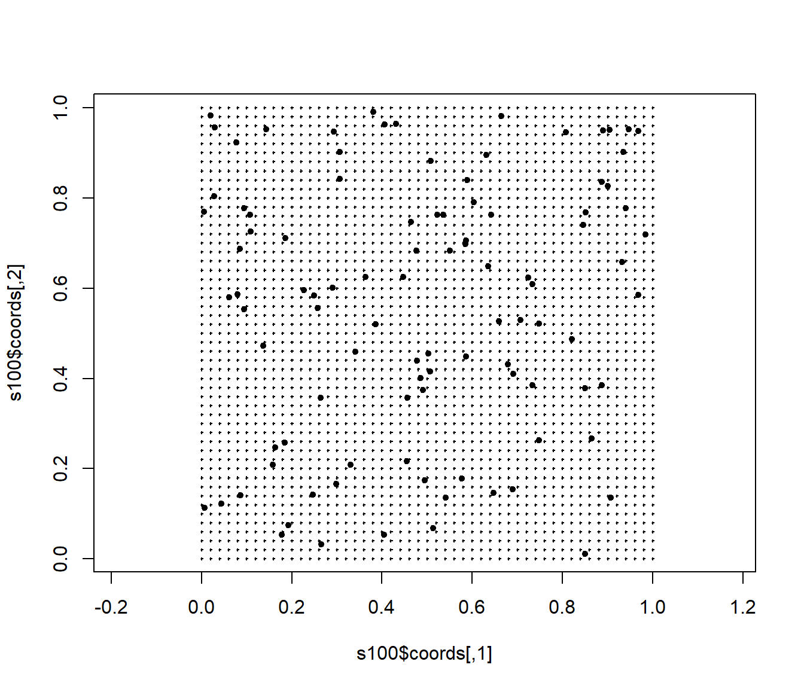
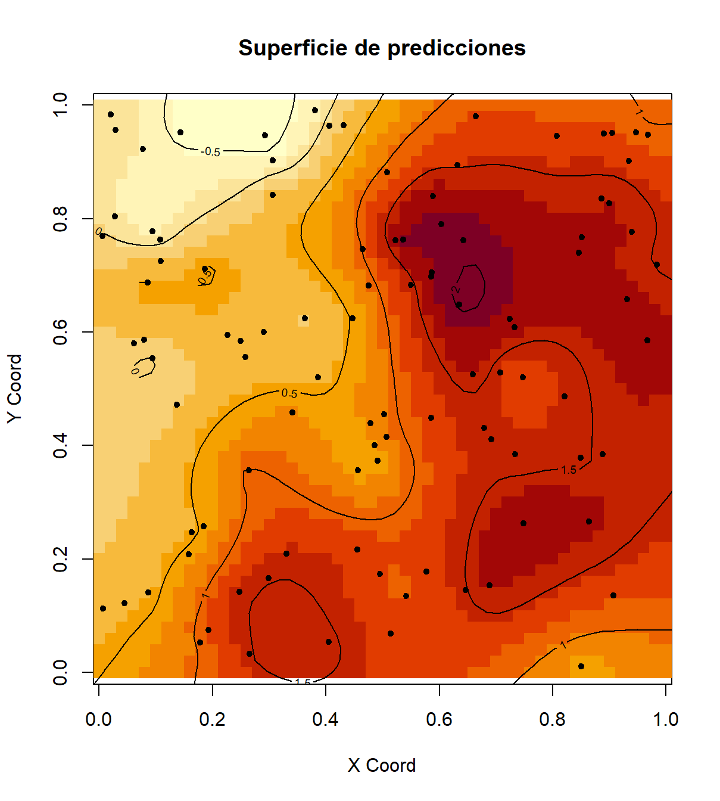
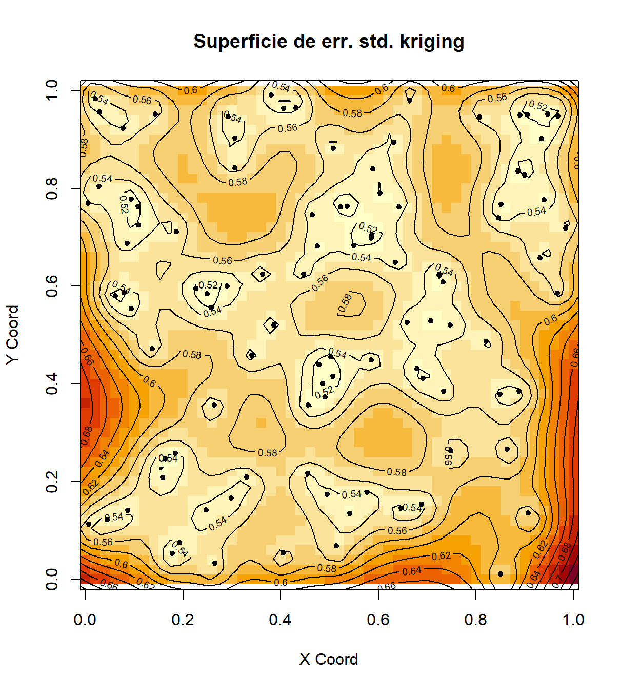
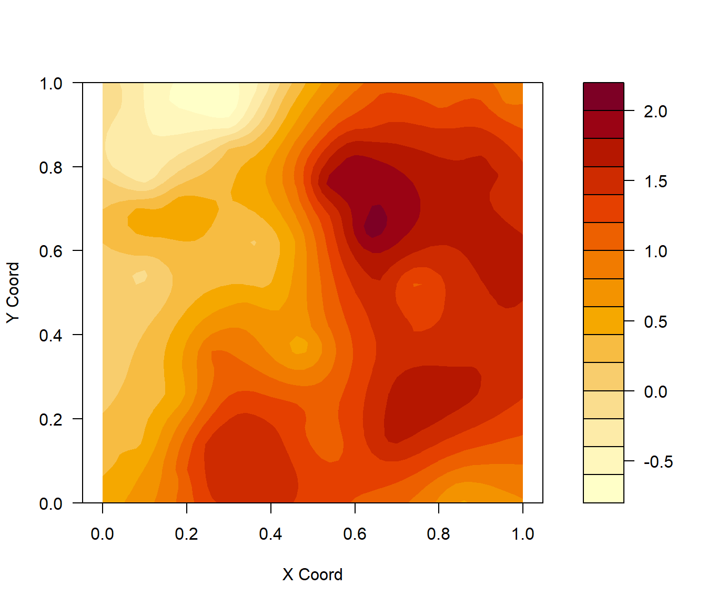
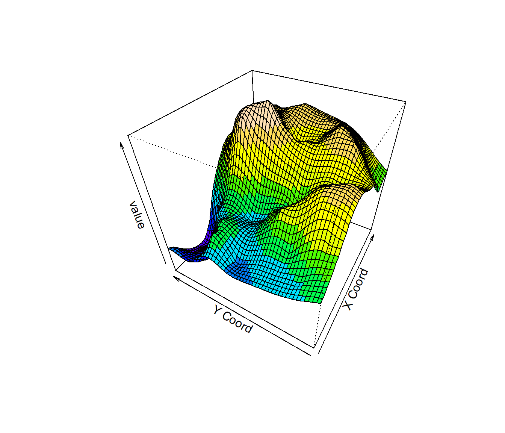
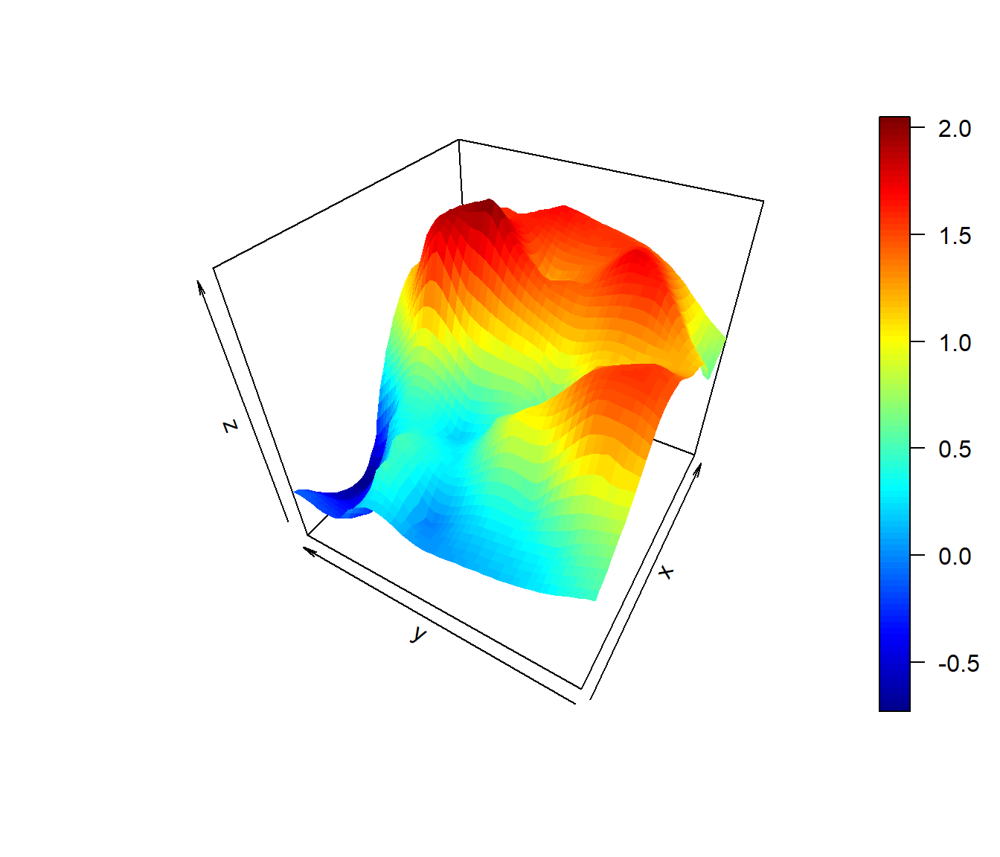
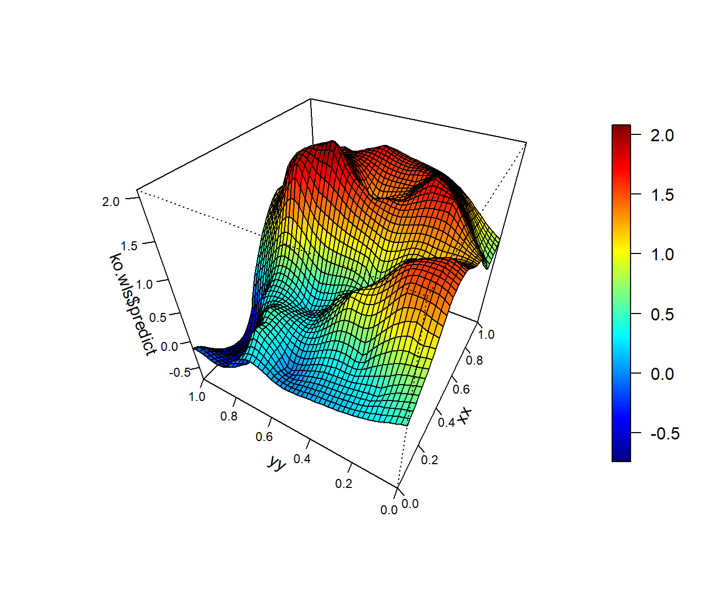
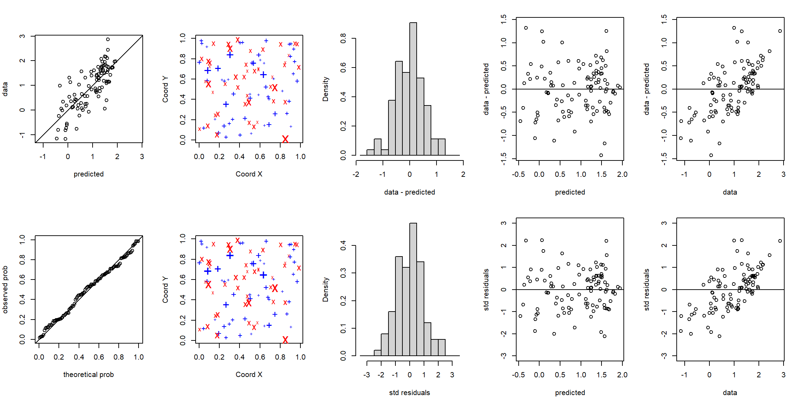

B.4 Predicción espacial (kriging)
El paquete geoR dispone de opciones para los métodos kriging
tradicionales, que dependiendo de las suposiciones acerca de la función
de tendencia se clasifican en:
Kriging simple (KS): media conocida
Kriging ordinario (KO): se supone que la media es constante y desconocida.
Kriging universal (KU): también denominado kriging con modelo de tendencia, se supone que la media es una combinación lineal (desconocida) de las coordenadas o de otras variables explicativas.
Existen también opciones adicionales para kriging trans-normal (con transformaciones Box-Cox para aproximarse a la normalidad y transformación de nuevo de resultados a la escala original manteniendo insesgadez). También admite modelos de variograma geométricamente anisotrópicos.
Para obtener una rejilla discreta de predicción puede ser de utilidad la
función expand.grid:
# Rejilla regular 51x51 en cuadrado unidad
xx <- seq(0, 1, l = 51)
yy <- seq(0, 1, l = 51)
pred.grid <- expand.grid(x = xx, y = yy)
plot(s100$coords, pch = 20, asp = 1)
points(pred.grid, pch = 3, cex = 0.2)
El comando para realizar kriging ordinario con variograma vario.wls
sería:
ko.wls <- krige.conv(s100, loc = pred.grid, krige = krige.control(obj.m = vario.wls))## krige.conv: model with constant mean
## krige.conv: Kriging performed using global neighbourhoodEl resultado es una lista incluyendo predicciones (ko.wls$predict) y
varianzas kriging (ko.wls$krige.var):
names(ko.wls)## [1] "predict" "krige.var" "beta.est" "distribution" "message"
## [6] "call"Para ver todas las opciones de kriging disponibles ejecutar
?krige.control. Para kriging con vecindario local (archivos de datos
grandes) se puede utilizar la función ksline.
Para representar las superficies se podría utilizar la función image(),
aunque la última versión del método image.kriging() puede fallar al añadir
elementos (por lo menos en RMarkdown; tampoco es compatible con par(mfrow)):
# oldpar <- par(mfrow = c(1, 2))
# image.kriging no es compatible con mfrow en últimas versiones
image(ko.wls, coords.data=s100$coords, main = "Superficie de predicciones")
contour(ko.wls, add = TRUE) #añadir gráfico de contorno
image(ko.wls, coords.data=s100$coords, values = sqrt(ko.wls$krige.var), main = "Superficie de err. std. kriging")
contour(ko.wls, values = sqrt(ko.wls$krige.var), add = TRUE)
# par(oldpar)Otras opciones:
contour(ko.wls,filled = TRUE)
fcol <- topo.colors(10)[cut(matrix(ko.wls$pred,nrow=51,ncol=51)[-1,-1],10,include.lowest=TRUE)]
persp(ko.wls, theta=-60, phi=40, col=fcol)
if(!require(plot3D))
stop('Required pakage `plot3D` not installed.') # install.packages('plot3D')## Loading required package: plot3Dpersp3D(xx, yy, matrix(ko.wls$predict, nrow = length(xx)), theta=-60, phi=40)
if(!require(npsp)) {
cat("Required pakage `npsp` not installed!\n")
cat("On windows, run `install.packages('https://github.com/rubenfcasal/npsp/releases/download/v0.7-8/npsp_0.7-8.zip', repos = NULL)`\n")
} else
spersp(xx, yy, ko.wls$predict, theta=-60, phi=40)## Loading required package: npsp## Package npsp: Nonparametric Spatial Statistics,
## version 0.7-8 (built on 2021-05-10).
## Copyright (C) R. Fernandez-Casal 2012-2021.
## Type `help(npsp)` for an overview of the package or
## visit https://rubenfcasal.github.io/npsp.##
## Attaching package: 'npsp'## The following object is masked from 'package:sm':
##
## binning
B.4.1 Validación cruzada
Para verificar si un modelo (de tendencia y variograma) describe adecuadamente
la variabilidad espacial de los datos (p.e. para comparar modelos), se emplea
normalmente la técnica de validación cruzada, función xvalid en geoR.
Por defecto la validación se realiza sobre los datos eliminando cada
observación (y utilizando las restantes para predecir), aunque se puede
utilizar un conjunto diferente de posiciones (o de datos) mediante el
argumento location.xvalid (y data.xvalid).
En el caso de procesos estacionarios permitiría diagnosticar si el modelo de variograma describe adecuadamente la dependencia espacial de los datos:
xv.wls <- xvalid(s100, model = vario.wls)## xvalid: number of data locations = 100
## xvalid: number of validation locations = 100
## xvalid: performing cross-validation at location ... 1, 2, 3, 4, 5, 6, 7, 8, 9, 10, 11, 12, 13, 14, 15, 16, 17, 18, 19, 20, 21, 22, 23, 24, 25, 26, 27, 28, 29, 30, 31, 32, 33, 34, 35, 36, 37, 38, 39, 40, 41, 42, 43, 44, 45, 46, 47, 48, 49, 50, 51, 52, 53, 54, 55, 56, 57, 58, 59, 60, 61, 62, 63, 64, 65, 66, 67, 68, 69, 70, 71, 72, 73, 74, 75, 76, 77, 78, 79, 80, 81, 82, 83, 84, 85, 86, 87, 88, 89, 90, 91, 92, 93, 94, 95, 96, 97, 98, 99, 100,
## xvalid: end of cross-validationsummary(xv.wls)## Min. 1st Qu. Median Mean 3rd Qu. Max.
## errors -1.429944 -0.4017821 0.04881742 0.0008450629 0.3359677 1.319640
## std.errors -2.110654 -0.7048560 0.07804159 0.0011568059 0.5922810 2.228054
## sd
## errors 0.5299818
## std.errors 0.9190753xv.reml <- xvalid(s100, model = vario.reml)## xvalid: number of data locations = 100
## xvalid: number of validation locations = 100
## xvalid: performing cross-validation at location ... 1, 2, 3, 4, 5, 6, 7, 8, 9, 10, 11, 12, 13, 14, 15, 16, 17, 18, 19, 20, 21, 22, 23, 24, 25, 26, 27, 28, 29, 30, 31, 32, 33, 34, 35, 36, 37, 38, 39, 40, 41, 42, 43, 44, 45, 46, 47, 48, 49, 50, 51, 52, 53, 54, 55, 56, 57, 58, 59, 60, 61, 62, 63, 64, 65, 66, 67, 68, 69, 70, 71, 72, 73, 74, 75, 76, 77, 78, 79, 80, 81, 82, 83, 84, 85, 86, 87, 88, 89, 90, 91, 92, 93, 94, 95, 96, 97, 98, 99, 100,
## xvalid: end of cross-validationsummary(xv.reml)## Min. 1st Qu. Median Mean 3rd Qu. Max.
## errors -1.178020 -0.3109277 0.02326020 0.011894019 0.2631596 1.521489
## std.errors -2.419106 -0.7304294 0.07954355 0.009241635 0.5802049 2.690047
## sd
## errors 0.4813133
## std.errors 0.9906166Por defecto la función plot (plot.xvalid) muestra 10 gráficos
diferentes (para más información ejecutar ?plot.xvalid), a grosso modo
los cinco primeros se corresponden con residuos simples (valores
observados menos predicciones) y los siguientes con residuos
estandarizados (dividiendo por la raíz cuadrada de la varianza de
predicción).
oldpar <- par(mfrow = c(2, 5), mar = c(bottom = 4.5, left = 4, top = 2, right = 2))
plot(xv.wls, ask = FALSE)
par(oldpar)
# plot(xv.reml)NOTA: Para re-estimar los parámetros del modelo cada vez que se
elimina una observación (i.e. validar el procedimiento de estimación)
añadir la opción reest = TRUE (puede requerir mucho tiempo de
computación).